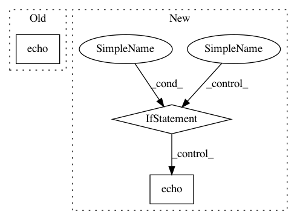

e06b04eacb0eefdd392e54a0ec2a4f24c22ef50c,cnvlib/target.py,,assign_names,#Any#Any#Any#,59
Before Change
ex_start, ex_end, ex_name = next(genes_in_chrom)
except StopIteration:
// Interval is past the last annotated gene in chromosome
ngfrills.echo("Interval %s:%d-%d unannotated in refFlat"
% (chrom, start, end))
// Fake it...
ex_start, ex_end = end + 1, end + 2
ex_name = default_name
After Change
for std in strand.split("|"):
if (chrom, std) in ref_genes:
strands_with_genes.extend(ref_genes[(chrom, std)])
if strands_with_genes:
genes_in_chrom = iter(sorted(strands_with_genes))
else:
ngfrills.echo("Chromosome", chrom, strand, "not in annotations")
continue
else:
ngfrills.echo("Chromosome", chrom, "strand", strand,
"not in annotations")
continue
In pattern: SUPERPATTERN
Frequency: 3
Non-data size: 3
Instances
Project Name: etal/cnvkit
Commit Name: e06b04eacb0eefdd392e54a0ec2a4f24c22ef50c
Time: 2014-09-08
Author: eric.talevich@gmail.com
File Name: cnvlib/target.py
Class Name:
Method Name: assign_names
Project Name: NeuromorphicProcessorProject/snn_toolbox
Commit Name: 71d61f102189f8b7337567ca34ad590f2ddf4808
Time: 2018-02-27
Author: bodo.rueckauer@gmail.com
File Name: snntoolbox/simulation/target_simulators/INI_ttfs_target_sim.py
Class Name: SNN
Method Name: simulate
Project Name: NeuromorphicProcessorProject/snn_toolbox
Commit Name: f41276a549a21f617c5d50182d67595cffcb4a73
Time: 2016-08-09
Author: evangelos.stromatias@imse-cnm.csic.es
File Name: snntoolbox/target_simulators/MegaSim_target_sim.py
Class Name: SNN_compiled
Method Name: build